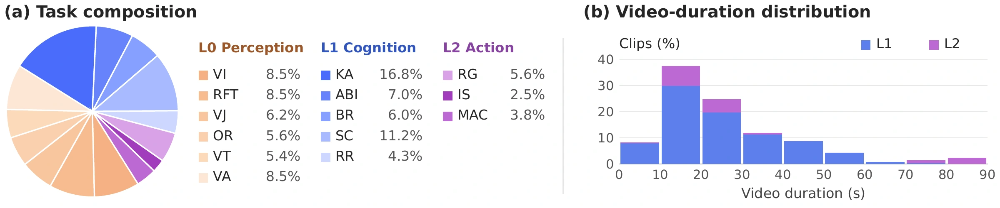
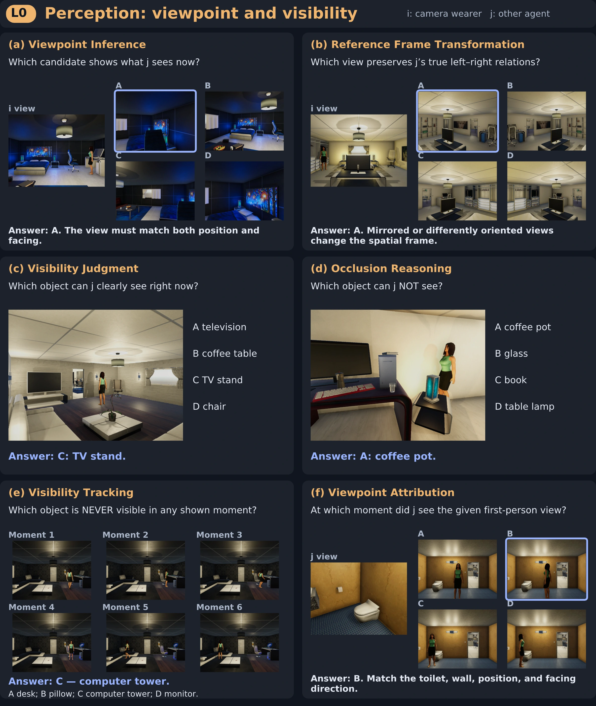
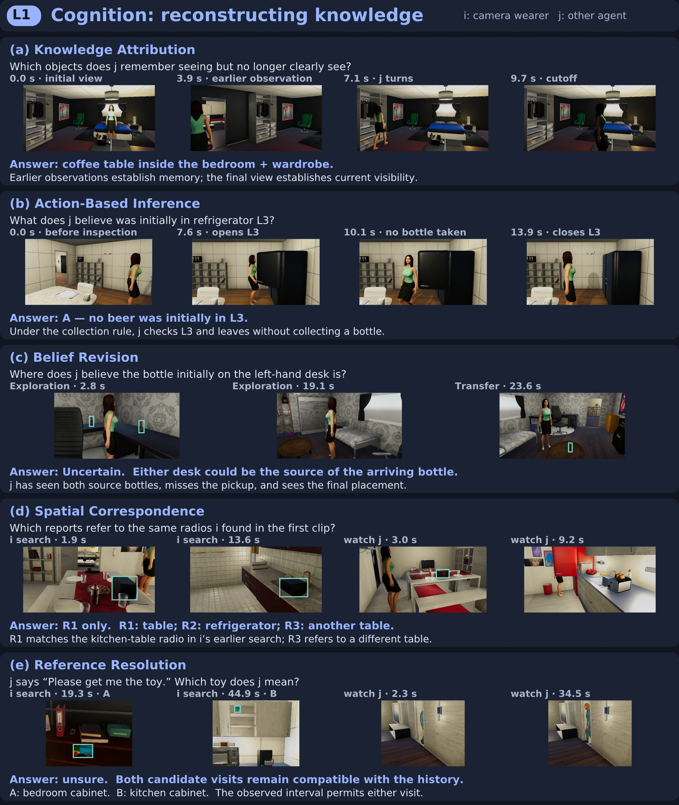
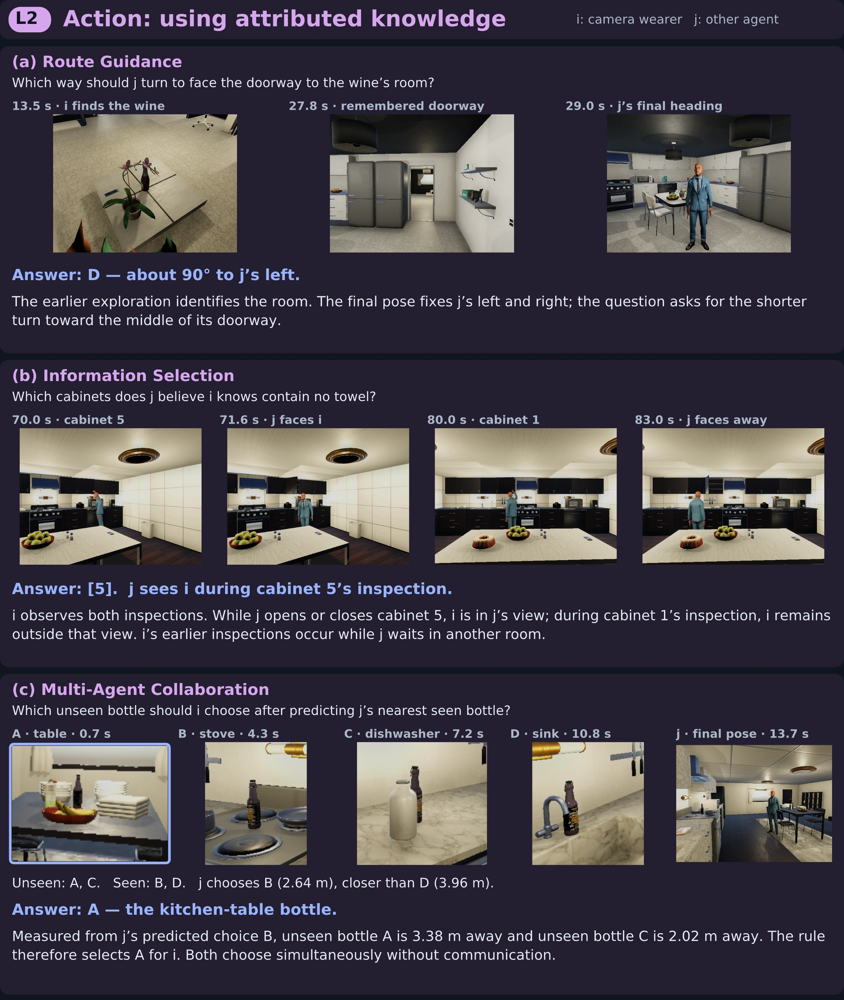

Perception
Perspective and visibility
502 questions · 6 task types
Embodied Spatial Intelligence
* Equal contribution · † Co-advising
Spatial intelligence is not merely egocentric, but fundamentally intersubjective: it emerges where our perceived world and the unseen worlds of other agents seamlessly interlock. We introduce SpatialToM, a benchmark for embodied spatial theory of mind, where agents must reconstruct others’ mental states from spatial perspectives, observation histories, and goal-directed actions. SpatialToM organizes 14 task types into three hierarchical tiers: (L0) Perception, reasoning about perspective and visibility; (L1) Cognition, attributing and integrating others’ knowledge and beliefs; and (L2) Action, leveraging these inferences for guidance and multi-agent coordination. Built in VirtualHome, SpatialToM comprises 1,172 questions grounded in agents’ distinct perceptual, cognitive and active experiences. Evaluation of state-of-the-art VLMs reveals that explicit memory and denser observations offer selective gains in spatial grounding and knowledge attribution, but remain vulnerable to perceptual errors and belief reconstruction failures. Oracle physical records improve accuracy from 61.1% to 87.1%, yet models still struggle with belief uncertainty, spatial-temporal reasoning, and collaborative actions. These findings expose a gap between perceiving the world and understanding the minds that inhabit it.
The benchmark
From what another agent can see, to what it knows, to how we act together.

Scale & composition
Distinct viewpoints and observation histories create differences in what agents see, know, and believe. SpatialToM tests reasoning about these differences in VirtualHome.
Inputs include static images, ordered image sequences, and videos. Some clips are shared across questions; 812 counts unique video clips, not questions or episodes.
Perspective and visibility
Belief attribution and integration
Guidance and coordination

Task examples
Explore each level’s design and examples from the supplementary material. Agent i is the camera wearer; agent j is the other agent.
Notation : ’s spatial knowledge and beliefs; : its observation history; : ’s actions observed by ; , : specified goals. All tasks use visual question answering, including action selection and prediction.
L0 · Perception
Attributing spatial knowledge starts with reconstructing the visual evidence available from another viewpoint. The Perception tier (L0) evaluates this spatial foundation: i uses scene layout and j’s position, orientation, and motion to infer its visual access under field-of-view and occlusion constraints.
is ’s estimate of ’s visual observations at the relevant moments.

L1 · Cognition
Spatial knowledge depends on accumulated experience, including information retained outside the current view and uncertainty about subsequent changes. The Cognition tier (L1) tests both the attribution of this knowledge to j and its integration with i’s own experience.
Observation histories support forward inference from visual access to knowledge, while goal-directed actions support backward inference about what the actor believes:
is ’s estimate of ’s spatial knowledge and beliefs, including uncertainty.
Cross-agent spatial integration relates another agent’s knowledge to one’s own experience by aligning spatial context across partial observations.
is ’s utterance to ; gives object correspondences or the resolved referent.

L2 · Action
The Action tier (L2) tests how attributed knowledge constrains guidance and coordination. We distinguish three requirements: guidance must fit the recipient’s spatial frame and knowledge, information selection must reflect the partner’s beliefs about the observer’s knowledge, and complementary actions must account for the partner’s expected choice.
is ’s estimate of ’s beliefs; is its estimate of what believes knows. is an action selection or prediction; is an instruction to .

These illustrated examples show selected video events, cropped frames, and shortened questions for readability. Outlines, answer marks, and explanations are figure annotations; timestamps are local to each clip.